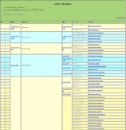

日本産アリ類画像データベースへようこそ
はじめに
このデータベースの使い方
「日本産アリ類画像データベース2008」のダウンロードについて New
更新履歴
アリ学入門
日本の代表的なアリの画像一覧が見られます。
アリ学の入門書：これまで出版されたアリについてのいくつかの書籍を電子化して公開しています。
Ｑ＆Ａ：これまでにユーザーから寄せられた質問とその回答を掲載しています。
日本産アリ類の最新の分類体系
 日本産アリ類の最新の分類体系一覧です。「.xls版」はこちらから。更新
日本産アリ類の名前さくいん
亜科名さくいん：亜科名ごとに属名が表になっています。
属名さくいん：属名を和名の50音順、学名アルファベット順で引くことができます。更新
種名さくいん：属名を和名の50音順、学名アルファベット順で引くことができます。更新
日本産アリ類の旧名・新名対応表（シノニムさくいん）
和名や学名が現在使われている最新のものか調べたい場合、または古い文献などに出てくる和名や学名が上の最新の分類体系では見つからない場合、以下の２つの新旧対応表から探してみてください。
日本産アリ類学名シノニムさくいん ver.1.0.2：過去に日本産のアリに使われていた学名と現在の学名との対応表です。更新
日本産アリ類和名シノニムさくいん ver.1.0.2 ：過去に日本産のアリに使われていた和名と現在の和名との対応表です。更新
日本産アリ類の種類を調べる（同定と検索）
２分岐検索表：細かい形態の特徴によって順に絞り込んでいきます。精度の高い同定が可能です。（研究者向き）
イメージ検索：生息地域やだいたいの外観から近いものを選ぶことで絞り込みます。（入門者向き）
専門用語の解説：検索表に使われている用語の解説などをみることができます。
同定のご依頼：アリ類の同定依頼については、アリ類データベース作成グループまでお問い合わせください。
世界のアリ
世界のアリの分類体系と和名を一覧表として公開しています。「.xls版はこちら」。
日本産のアリのタイプ標本（ハーバード大学 比較動物学博物館 [英語] ）
日本産のアリのタイプ標本（ロンドン自然史博物館）
オーストラリア産アリ類画像データベース [英語]
|